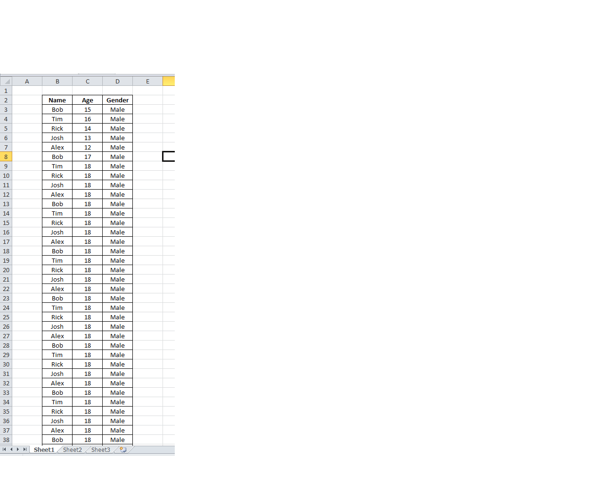
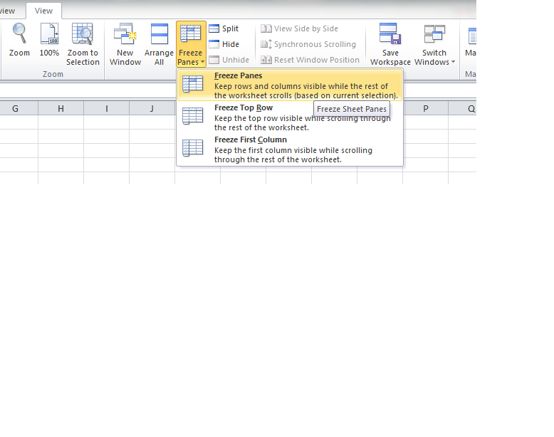
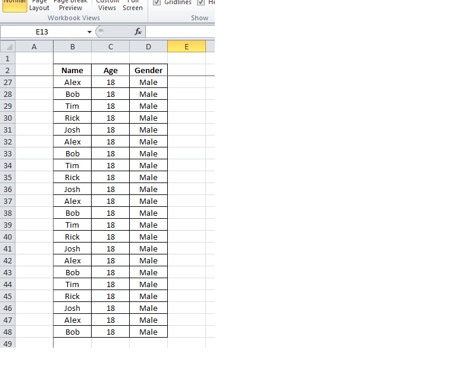

To freeze panes in Microsoft Excel 2010 you must do the following steps:
1. First we have this tabel:

2. Now to freeze the panes we will go to View->Window->Freeze Panes. From here you will be able to choose the options you want to freeze.

3. Now select the options you want and the result should be something like this:

Back to main page